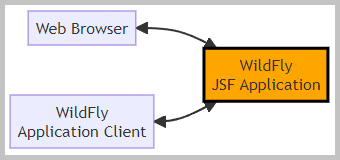
 The flowchart with the WildFly application.
The flowchart with the WildFly application.
The sections of this project:
Java source code. Packages in modules 'common', 'ejb', 'appclient':

 module 'common' application sources:
kp
module 'common' application sources:
kp
module 'ejb' application sources:
kp
module 'appclient' application sources:
kp
Action:

 1. With batch file
"01 WildFly DeleteLog Startup.bat" start the WildFly server.
1. With batch file
"01 WildFly DeleteLog Startup.bat" start the WildFly server.
2. With batch file
"02 MVN clean install deploy WildFly.bat" build and deploy the application
 on the WildFly server.
on the WildFly server.
3. With the URL http://localhost:8080/Study13/
open in the web browser the 'home page'.
 1.1. The 'home page' file index.html:
HTML code,
HTML preview
1.1. The 'home page' file index.html:
HTML code,
HTML preview
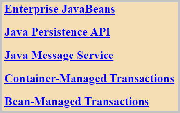
The screenshot of the home page.
1.2. The link to the WildFly Application Server Administration Console.
Action:
Go to page http://localhost:8080/Study13/
and select "Enterprise JavaBeans".
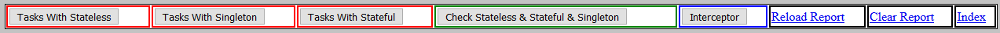
Screenshot from "Enterprise JavaBeans" page controls.
The JSF page on the screenshot 'e_j_b.xhtml' uses the beans:
Back to the top of the page
2.1. EJB Example 'Tasks'There are three batches (each having five tasks) launched with managed executor service:
2.1.1. The tasks with the stateless session bean
StaLeBean.
This is the implementation of the interface
StaLe.
The method
TasksManagedBean::researchStateless submits the tasks to the 'ManagedExecutorService'.
It is executed the method
CommonImpl::change.
Action:
Push the button "Tasks With Stateless" three times.
Results:
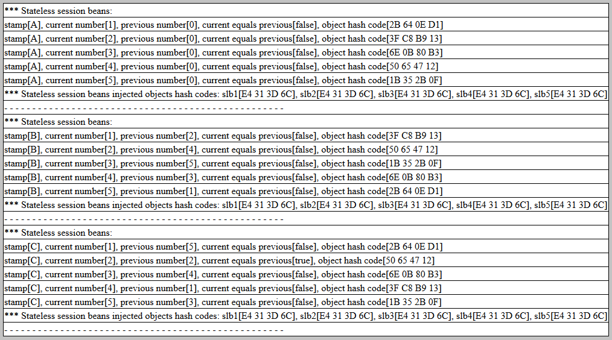
Screen from three 'Tasks With Stateless' actions.
2.1.2. The tasks with the singleton session bean
SingBean.
This is the implementation of the interface
Sing.
The method
TasksManagedBean::researchSingleton submits the tasks to the 'ManagedExecutorService'.
It is executed the method
CommonImpl::change.
Action:
Push the button "Tasks With Singleton" three times.
Results:
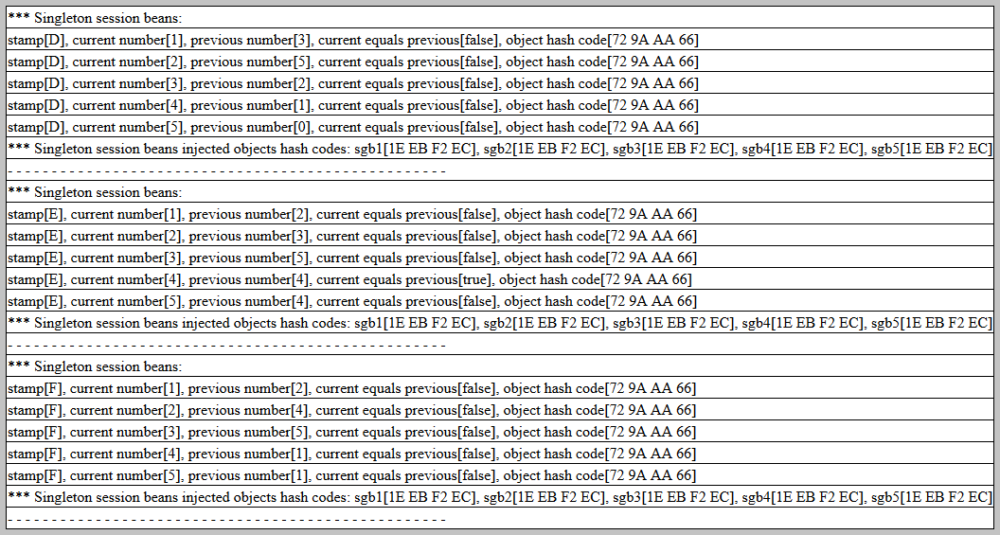
Screenshot from three 'Tasks With Singleton' actions.
2.1.3. The tasks with the stateful session bean
StaFu.
This is the implementation of the interface
StaFuBean.
The method
TasksManagedBean::researchStateful submits the tasks to the 'ManagedExecutorService'.
It is executed the method
CommonImpl::change.
Action:
Push the button "Tasks With Stateful" three times.
Results:
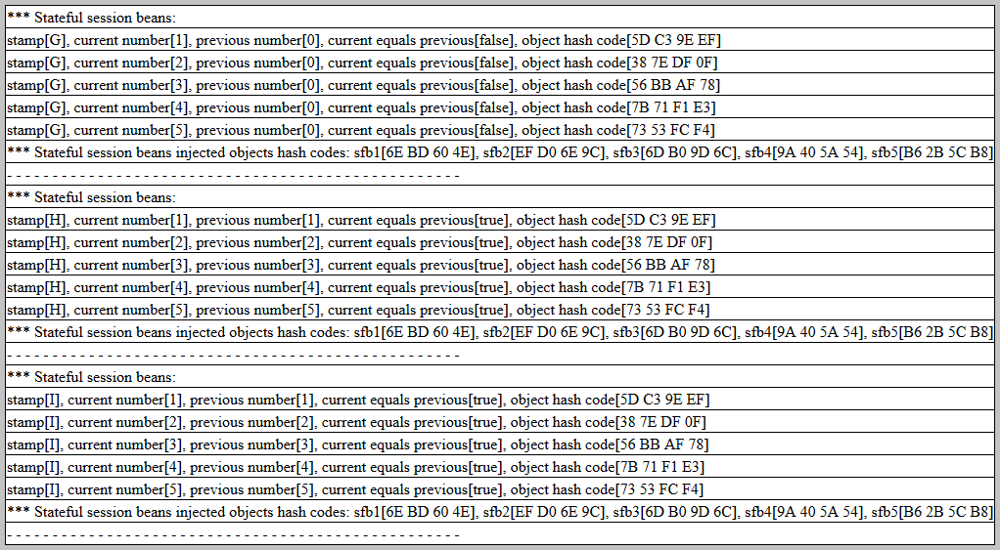
Screenshot from three 'Tasks With Stateful' actions.
2.1.4. The WildFly application client
'ClientApplication'.
Action:
With batch file
"03 Run WildFly Application Client.bat" run the WildFly application client.
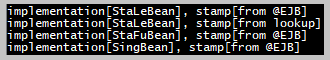
The client console log.
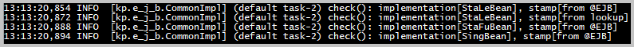
The server console log.
Back to the top of the page
2.2. EJB Example 'Checks'Action:
Push the button "Check Stateless & Stateful & Singleton".
2.2.1. It is executed the method
'ChecksManagedBean::researchStatelessStatefulSingleton'.
2.2.2. The bean instances invoked in this example:
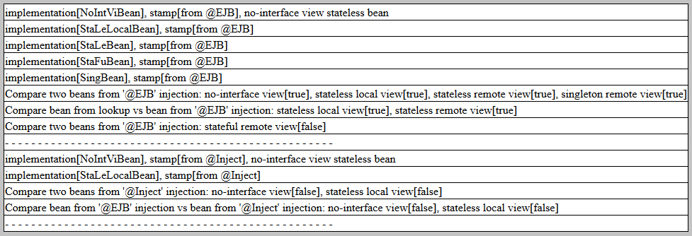
Screenshot from 'Check Stateless & Stateful & Singleton' action.
Back to the top of the page
2.3. EJB Example 'Interceptor'Action:
Push the button "Interceptor".
2.3.1. There were implemented interceptors for the time elapsed capture.
In the
'TimeElapsedBean' the interceptors were added to those methods:
2.3.2. It is executed the method
'InterceptorsManagedBean::researchInterceptor'.
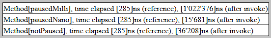
Screenshot from 'Interceptor' action.
Back to the top of the page
The data source 'Study13DS' uses an H2 database with the name 'study13' and in-memory mode.
The configuration files:
Action:
Go to page http://localhost:8080/Study13/
and select "Java Persistence API".
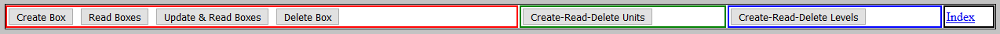
Screenshot from "Java Persistence API" page controls.
The JSF page on the screenshot 'j_p_a.xhtml' uses the beans:
Back to the top of the page
3.1. JPA Example 'Boxes'Action:
1. Push the button 'Create Box' four times.
2. Push the button 'Read Boxes'.
3. Push the button 'Update & Read Boxes'.
4. Push the button 'Delete Box' four times.
3.1.1. The entity classes for boxes:
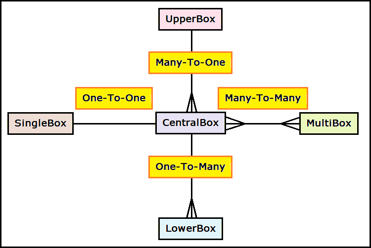
The relationships diagram for the boxes entity classes.
3.1.2. For the 'Create Box' (method
'BoxBean::createCentralBox'
) only the first 3 calls were successful.
The 4th call failed because the allowable creation maximum is 3
'CentralBox' objects.
It was the transaction rollback on the 4th call.
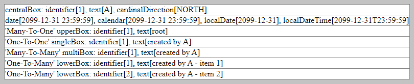
Screenshot from 1st 'Create Box' action.
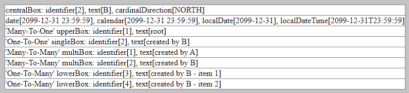
Screenshot from 2nd 'Create Box' action.
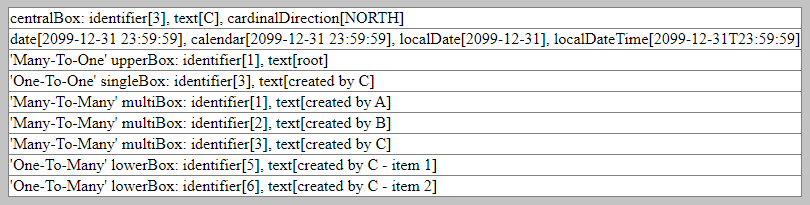
Screenshot from 3rd 'Create Box' action.
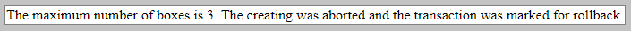
Screenshot from 4th 'Create Box' action.
3.1.3. For the 'Read Boxes' (method
'BoxBean::readCentralBoxes'
) report shows the 3
'CentralBox'
objects and their dependencies.
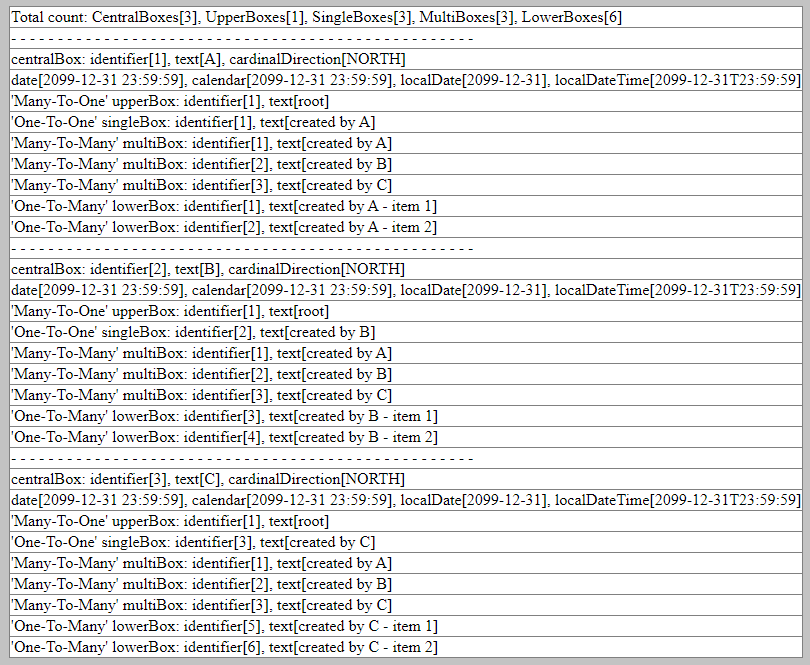
Screenshot from 'Read Boxes' action.
3.1.4. For the 'Update & Read Boxes' (method
'BoxBean::updateCentralBoxes'
) the
'CentralBox'
field 'cardinalDirection' was changed.
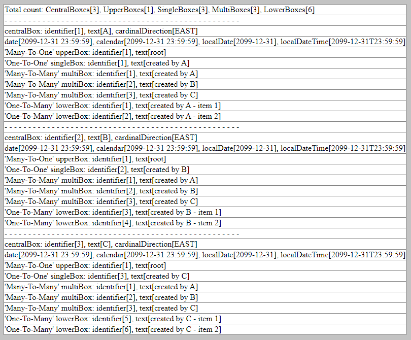
Screenshot from 'Update & Read Boxes' action.
3.1.5. For the 'Delete Box' (method
'BoxBean::deleteCentralBox'
) the 4th call failed because there were no more
'CentralBox'
objects left after three 'Delete Box' calls.
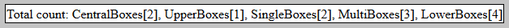
Screenshot from 1st 'Delete Boxes' action.
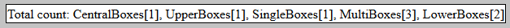
Screenshot from 2nd 'Delete Boxes' action.
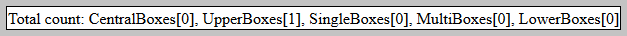
Screenshot from 3rd 'Delete Boxes' action.
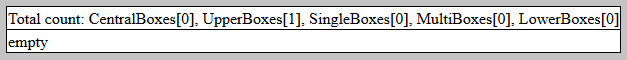
Screenshot from 4th 'Delete Boxes' action.
Back to the top of the page
3.2. JPA Example 'Units'Action:
1. Push the button 'Create-Read-Delete Units' the first time.
2. Push the button 'Create-Read-Delete Units' the second time.
3.2.1. For read actions there were used criteria queries (created with 'CriteriaBuilder').
The units entity classes have relationships:
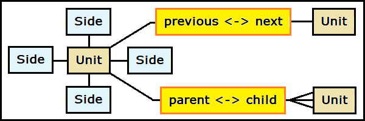
The units relationships diagram.
3.2.2. With the first 'Create-Read-Delete Units' action the
'Unit'
objects were created and persisted to the database. It executed the method
'UnitManagedBean::createUnits'.
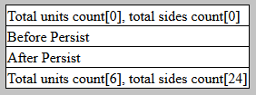
Screenshot from 1st 'Create-Read-Delete Units' action
3.2.3. With the second 'Create-Read-Delete Units' action the
'Unit'
objects were read from the database, presented as a report, and removed from the database.
It executed the method
'UnitManagedBean::readAndDeleteUnits'.
The presented report shows the results of the query.
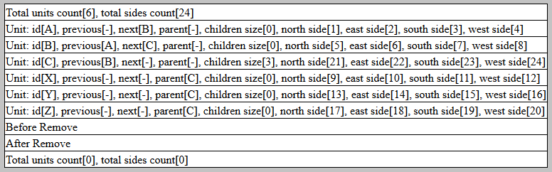
Screenshot from 2nd 'Create-Read-Delete Units' action
Back to the top of the page
3.3. JPA Example 'Levels'Actions:
1. Push the button 'Create-Read-Delete Levels' the first time.
2. Push the button 'Create-Read-Delete Levels' the second time.
3.3.1. For CRUD actions there were used criteria queries (created with 'CriteriaBuilder') with metamodels in package
'levels'.
The entity classes for levels:
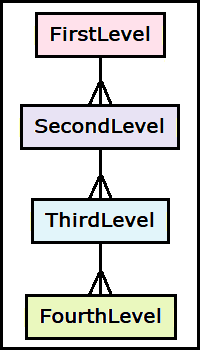
The levels relationships diagram. It is the 'One-To-Many' hierarchical relationships.
3.3.2. With the first 'Create-Read-Delete Levels' action the
'Level'
objects were created and persisted to the database. It executed the method
'LevelManagedBean::createLevels'.
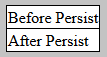
Screenshot from 1st 'Create-Read-Delete Levels' action
3.3.3. With the second 'Create-Read-Delete Levels' action the
'Level'
objects were read from the database, presented as a report, and removed from the database.
The four methods were executed in a sequence:
The presented report shows the results of the four queries:
For the 1st, 2nd, and 3rd queries, the result is identical.
The result of the 4th query is the intersection of the 'having' restriction and the 'where' restriction.
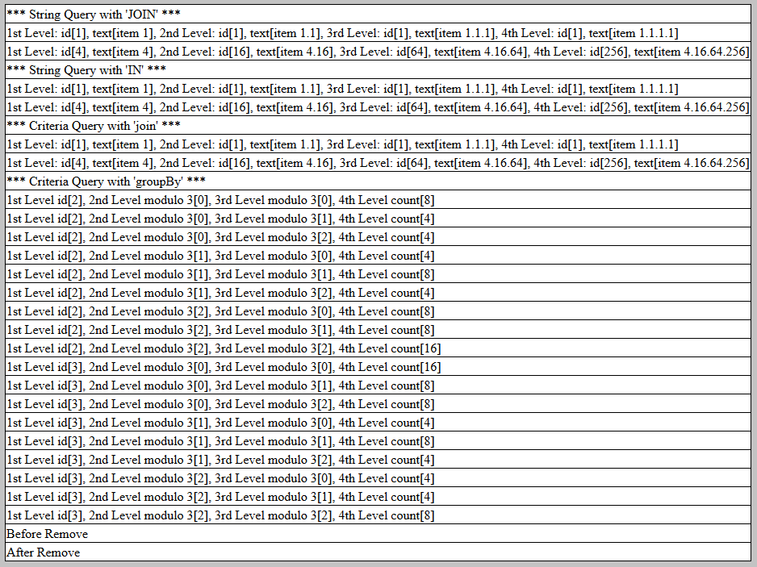
Screenshot from 2nd 'Create-Read-Delete Levels' action
Back to the top of the page
The initial JMS configuration in the WildFly server was done with the batch file
'06 CLI Config Queue & Topic.bat'.
The changed batch script was used for creating the topics.
Initial actions:
1. Go to page http://localhost:8080/Study13/
and select "Java Message Service".
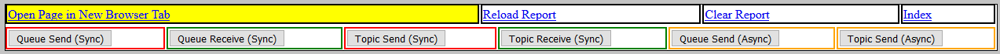
Screenshot from "Java Message Service" page controls.
The JSF page on the screenshot 'j_m_s.xhtml' uses the beans:
| 'QueueProducerSync' | 'QueueConsumerSync' |
| 'TopicProducerSync' | 'TopicConsumerSync' |
| 'QueueProducerAsync' | |
| 'TopicProducerAsync' |
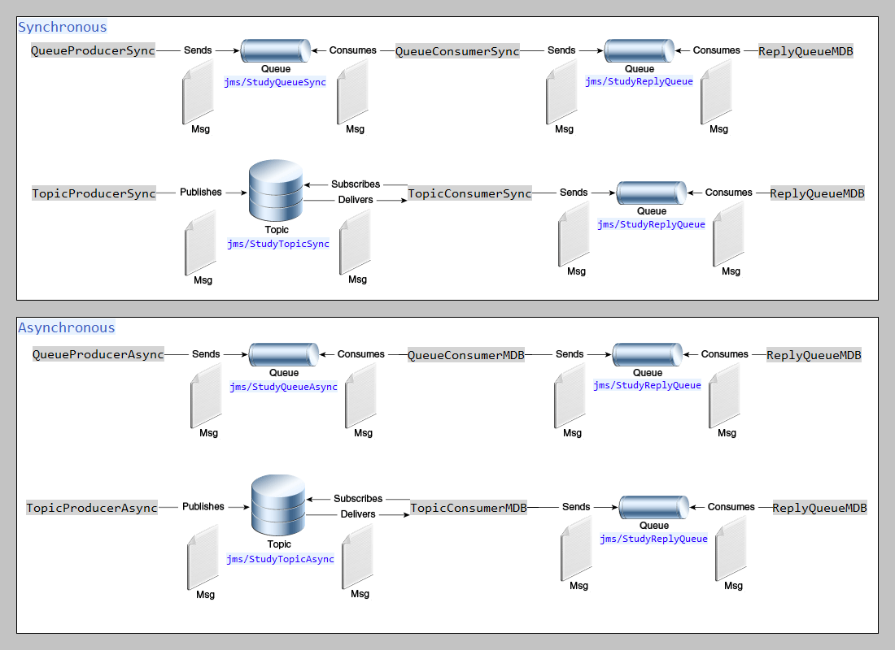
Queues & topics diagram.
Back to the top of the page
4.1. JMS Example 'Synchronous Queue & Topic'Actions:
1. Using the link 'Open Page in New Browser Tab' open the second browser tab.
2. In the 2nd tab push the button "Queue Receive (Sync)".
3. In the 1st tab push the button "Queue Send (Sync)".
4. In the 2nd tab push the button "Topic Receive (Sync)".
5. In the 1st tab push the button "Topic Send (Sync)".
6. In the 1st tab click the link "Reload Report".
4.1.1. The synchronous queue methods
4.1.2. The synchronous topic methods
4.1.3. The methods used on reply queue:
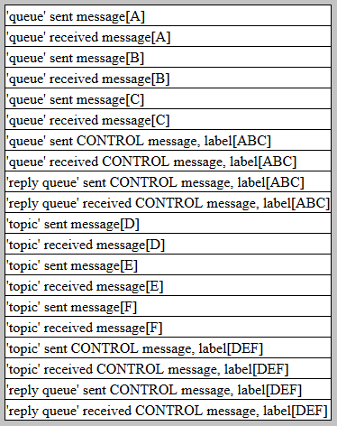
Screenshot from synchronous queue & topic send/receive actions.
Back to the top of the page
4.2. JMS Example 'Asynchronous Queue & Topic'Action:
1. Push the button "Queue Send (Async)".
2. Push the button "Topic Send (Async)".
3. Click the link "Reload Report".
4.2.1. The asynchronous queue methods:
4.2.2. The asynchronous topic methods:
4.2.3. The methods used on reply queue:
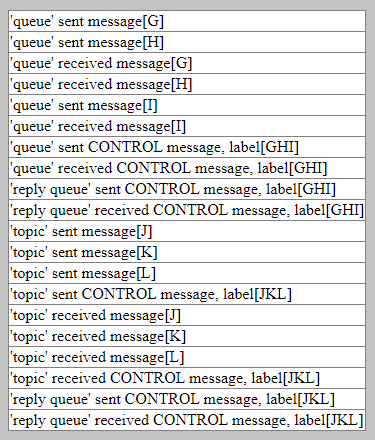
Screenshot from asynchronous queue & topic send/receive actions.
Back to the top of the page
4.3. Other JMS test scenarios
4.3.1. "First send then receive" test scenario for synchronous queue:
4.3.2. "First send then receive" test scenario for synchronous topic:
4.3.3. "Two consumers" test scenario for synchronous queue:
4.3.4. "Two subscribers" test scenario for synchronous topic:
The queues initializer for the message-driven beans 'ParcelQueuesInitializer' creates the queues:
Action:
1. Go to page http://localhost:8080/Study13/
and select "Container-Managed Transactions".
2. Push the button "Send to 'CreateParcelQueue'" three times and the button "Reload Report".
3. Push the button "Send to 'ReadParcelQueue'" and the button "Reload Report".
4. Push the button "Show Audit" and the button "Reload Report".
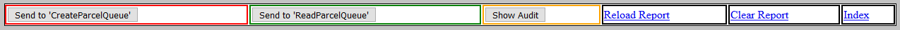
Screenshot from "Container-Managed Transactions" page controls.
The JSF page on the screenshot 'transactions_c_m_t.xhtml' uses the bean 'TransCmtManagedBean'
5.1. The 'Parcel'
objects are created with the method
'ParcelAdministratorBean::create'
and read with the method
'ParcelAdministratorBean::read'.
The auditing is done with the methods
'AuditorBean::recordCreated' and
'AuditorBean::recordApproved'.
The 'Parcel' approving logic in method 'Approver::approve':
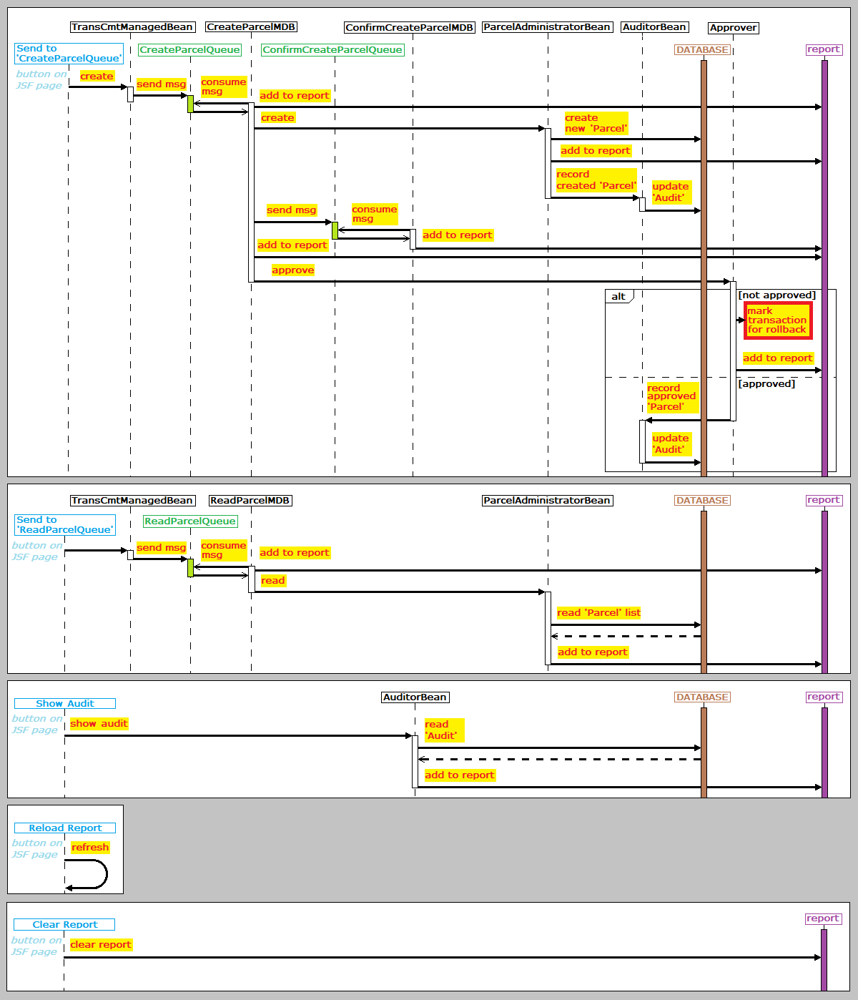
The CMT sequence diagram.
5.2. For these three repeated actions "Send to 'CreateParcelQueue'" (method
'TransCmtManagedBean::create''):
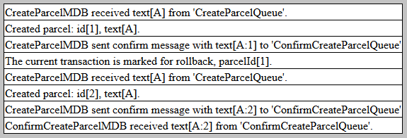
Screenshot from 1st "Send to 'CreateParcelQueue'" action
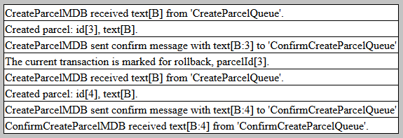
Screenshot from 2nd "Send to 'CreateParcelQueue'" action
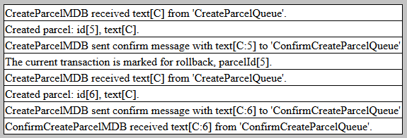
Screenshot from 3rd "Send to 'CreateParcelQueue'" action
5.3. The results of the action "Send to 'ReadParcelQueue'" (method
'TransCmtManagedBean::read') show that all committed
'Parcel'
objects in the database have even id values. This proves that all not approved
'Parcel'
objects were rolled back.
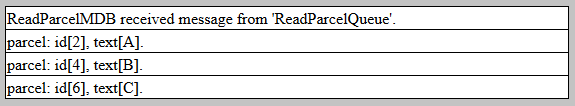
Screenshot from "Send to 'ReadParcelQueue'" action.
5.4. The auditing in the action "Show Audit" (method
'TransCmtManagedBean::showAudit') is always processed in a new transaction.
Therefore the audit information was not lost when the main transaction was rolled back.
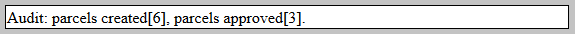
Screenshot from "Show Audit" action
Back to the top of the page
|
In a stateless session bean with bean-managed transactions, a business method must commit or roll back a transaction before returning. However, a stateful session bean does not have this restriction. In a stateful session bean with a JTA transaction, the association between the bean instance and the transaction is retained across multiple client calls. Even if each business method called by the client opens and closes the database connection, the association is retained until the instance completes the transaction. |
Action:
1. Go to the page http://localhost:8080/Study13/
and select "Bean-Managed Transactions".
2. Push the button "Create Capsule" two times.
3. Push the button "Commit Transaction" and the button "Read Capsule".
4. Push the button "Create Capsule" and the button "Read Capsule".
 This step has created a not committed 'Capsule' object.
This step has created a not committed 'Capsule' object.
5. Push the button "Rollback Transaction" and the button "Read Capsule".
 It was rolled back to the last commit (point 3. above).
It was rolled back to the last commit (point 3. above).
6. Push the button "Delete Capsule" and the button "Read Capsule".
 The "Delete Capsule" action deletes the last created 'Capsule'
The "Delete Capsule" action deletes the last created 'Capsule'
7. Push the button "Rollback Transaction" and the button "Read Capsule".
 Again, it was rolled back to the last commit (point 3. above).
Again, it was rolled back to the last commit (point 3. above).
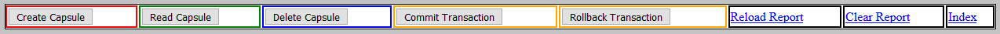
Screenshot from "Bean-Managed Transactions" page controls.
The JSF page on the screenshot 'transactions_b_m_t.xhtml' uses the bean 'TransBmtManagedBean'
6.1. The methods of the stateful session bean
'CapsuleAdministratorBean':
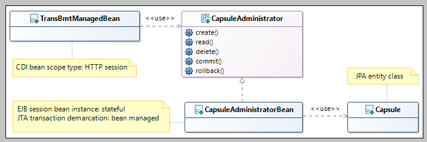
BMT class diagram.
6.2. Creating the
'Capsule'
object and committing the transaction.
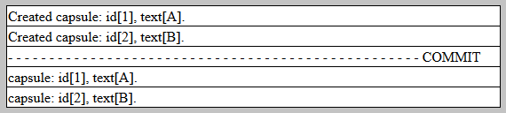
Screenshot from actions: 1st "Create Capsule", 2nd "Create Capsule", "Commit Transaction", "Read Capsule"
6.3. Creating the
'Capsule'
object and rollbacking the transaction.
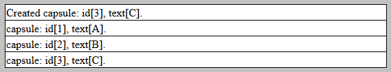
Screenshot from actions: 3rd "Create Capsule", "Read Capsule"
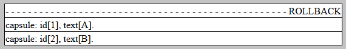
Screenshot from actions: 1st "Rollback Transaction", "Read Capsule"
6.4. Deleting the
'Capsule'
object and rollbacking the transaction.
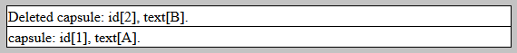
Screenshot from actions: "Delete Capsule", "Read Capsule"
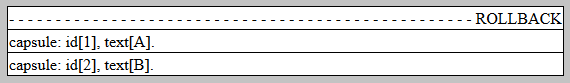
Screenshot from actions: 2nd "Rollback Transaction", "Read Capsule"
Back to the top of the page